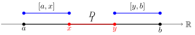
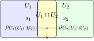

Interval Trees
Introduction
Interval trees are an interesting data structure that provides efficient management and querying of intervals, which are particularly useful in scheduling, computational geometry, and time-based applications.
Use cases include:
Scheduling: Finding available time slots and detecting conflicts
Resource Management: Tracking continuous blocks of memory or bandwidth
Genomics: Analyzing overlapping DNA sequences
Computational Geometry: Detecting line segment intersections
Geographic Systems: Managing map layers and spatial queries
Database Optimization: Indexing temporal data ranges
Cache Management: Optimizing memory access patterns
Using an Extended Number Line
For some applications, we can extend the number line to include infinite values to simplify the logic of interval tree operations. This allows us to represent intervals like (-∞, a] and [b, ∞) elegantly. Additionally, distinguishing between closed [a,b] and open (a,b) intervals, along with representing empty intervals ∅, provides mathematical rigor. However, we will focus on a simpler approach using finite, closed intervals for clarity.
The portion library provides these extended interval capabilities if needed, but its additional complexity isn’t necessary for our core interval tree implementation.
The Easy Way
The code for this section is available on GitHub.
Setting Up an Interval Tree in Python
For this tutorial, we will implement an interval tree using an AVL tree as our foundation. An AVL tree is a self-balancing binary search tree that maintains a height balance factor, ensuring O(log n) operations.
Let’s examine the core building block - the AVL tree node that we’ll extend to handle intervals.
class IntervalNode:
def __init__(self, start: float, end: float):
self.start = start
self.end = end
self.length = end - start
self.total_length = self.length
self.left = None
self.right = None
self.height = 1 # For AVL tree balancing
def update_stats(self):
pass
@staticmethod
def get_height(node: IntervalNode | None) -> int:
passThe structure here is similar to any standard BST node, with the addition of the height attribute, a cached length attribute, a cached total_length attribute, and the update_stats method.
We maintain these length attributes to have slightly faster queries of the length of the intervals in the subtree.
Updating Stats
The update_stats method is a good candidate for a lazy update, as we can traverse the tree and update the length and height attributes of the nodes as we traverse.
This method allows us to maintain the length and height attributes in the nodes as we insert and delete intervals, only updating the affected nodes and their ancestors as needed.
def update_stats(self):
self.length = self.end - self.start
self.total_length = self.length
if self.left:
self.total_length += self.left.total_length
if self.right:
self.total_length += self.right.total_length
self.height = 1 + max(self.get_height(self.left), self.get_height(self.right))Getting the Height
The get_height method is a static accessor that returns the height of a node. It handles the base case of empty subtrees by returning 0 for None nodes, establishing a natural recursion.
@staticmethod
def get_height(node: IntervalNode | None) -> int:
return node.height if node else 0The Interval Tree Class
The interval tree class is a wrapper around the AVL tree node class, providing a root node and methods for inserting, deleting, and querying intervals.
class IntervalTree:
def __init__(self):
self.root = NoneWe will implement the insertion, deletion, and splitting operations in the next section. However, we will elide the details of the AVL tree balancing logic for now.
Invariants
The interval tree maintains the following invariants:
- No two intervals in the tree overlap
- The tree is balanced, ensuring O(log n) operations
Deletion and Splitting Operations
The _delete_overlaps method is a key operation for maintaining disjoint intervals in our tree. Given an interval [start, end], it removes all intervals that overlap with it, collecting them in a list for potential later use.
def _delete_overlaps(self, node: Optional[IntervalNode], start: int, end: int,
overlapping_nodes: List[IntervalNode]) -> Optional[IntervalNode]:
if not node:
return None
# If the current node interval is completely after the interval to delete, go left
if end <= node.start:
node.left = self._delete_overlaps(node.left, start, end, overlapping_nodes)
# If the current node interval is completely before the interval to delete, go right
elif start >= node.end:
node.right = self._delete_overlaps(node.right, start, end, overlapping_nodes)
else:
# Current node overlaps with [start, end], remove it and collect it
overlapping_nodes.append(node)
# Delete this node and replace it with its children
if node.left and node.right:
# Node with two children: Get the inorder successor (smallest in the right subtree)
successor = self._get_min(node.right)
# Copy the successor's content to this node
node.start = successor.start
node.end = successor.end
# Delete the successor
node.right = self._delete_overlaps(node.right, successor.start, successor.end, overlapping_nodes)
elif node.left:
node = node.left
else:
node = node.right
if node:
node.update_stats()
node = self._rebalance(node)
return nodeThe deletion algorithm exploits BST properties to achieve O(log n) overlap detection. The left/right traversal pattern follows directly from the interval ordering - intervals are sorted by start time, so binary search efficiently locates overlaps. For overlapping nodes, successor replacement maintains the BST invariant by selecting min(right_subtree), preserving both the ordering property and the AVL balance. This combines interval scheduling constraints with BST deletion in a single operation.
This operation is key for interval scheduling - by removing overlaps during insertion, we maintain our disjoint interval invariant.
After deletion, we split overlapping intervals into non-overlapping fragments. For each overlapping interval [a,b], we create up to two new intervals: [a,start) if a < start, and [end,b) if end < b. This splitting operation preserves the maximum amount of the original intervals while maintaining our disjoint invariant.
def delete_interval(self, start: int, end: int) -> None:
# Find overlapping intervals
overlapping_nodes: List[IntervalNode] = []
self.root = self._delete_overlaps(self.root, start, end, overlapping_nodes)
# For each overlapping interval, we may need to split it
for node in overlapping_nodes:
if node.start < start:
# Left part remains available
self.root = self._insert(self.root, IntervalNode(node.start, start))
if node.end > end:
# Right part remains available
self.root = self._insert(self.root, IntervalNode(end, node.end))Insertion
Curiously, insertion is a simpler operation than deletion. We can insert an interval [start, end] by simply inserting it into the tree. If the interval overlaps with any existing intervals, the tree will automatically split them as we saw in the deletion section. This again maintains our disjoint interval invariant. And preserves the inserted interval as is.
def insert_interval(self, start: int, end: int) -> None:
overlapping_nodes: List[IntervalNode] = []
self.root = self._delete_overlaps(self.root, start, end, overlapping_nodes)
# Merge overlapping intervals with the new interval
for node in overlapping_nodes:
start = min(start, node.start)
end = max(end, node.end)
# Insert the merged interval
self.root = self._insert(self.root, IntervalNode(start, end))Mathematical Aside
Our interval tree operations can be viewed through the lens of lattice theory and order theory. The intervals form a partially ordered set (poset) with respect to the containment relation, but our operations are more interesting than simple containment.
Let’s consider what’s happening algebraically:
Interval Splitting Operation
For an interval ( I = [a,b] ) and a deletion region ( D = [x,y] ), our splitting operation is effectively:[ (I, D) =
\[\begin{cases} \{ [a, x], [y, b] \} & \text{if } a < x < y < b \\ \{ [a, x] \} & \text{if } a < x < b \leq y \\ \{ [y, b] \} & \text{if } x \leq a < y < b \\ \emptyset & \text{if } x \leq a \leq b \leq y \\ \{ [a, b] \} & \text{if } y \leq a \text{ or } b \leq x \end{cases}\]]
This accounts for all possible relative positions of ( a, x, y, b ). Essentially, we remove the overlap ( I D ) from ( I ) to preserve maximal non-overlapping segments. This operation forms a meet-semilattice where the meet operation ( ) is the intersection of intervals.
Visualization
Interval Merging During Insertion
When inserting ( I = [a,b] ), we perform:[ (I_1,,I_n,I) = [(a_1,,a_n,a), (b_1,,b_n,b)] ]
where ( I_1,,I_n ) are overlapping intervals. This forms a join-semilattice where the join operation ( ) creates the smallest interval containing all operands.
Visualization of Interval Merging:
The key mathematical insight is that our operations form a complemented distributive lattice on the space of disjoint interval sets. The complement operation corresponds to our splitting operation, while the join is our merging operation.
This algebraic structure ensures that:
- Our operations are well-defined and closed.
- The disjoint property is preserved as an invariant.
- The operations are associative and commutative.
This is why our seemingly complex tree operations reduce to clean algebraic manipulations on intervals, giving us confidence in their correctness and completeness.
Meet Semilattice Structure
The meet operation on intervals has interesting algebraic properties. For any two intervals ( I_1 = [a_1,b_1] ) and ( I_2 = [a_2,b_2] ), their meet is:
[ I_1 I_2 = \[\begin{cases} [\max(a_1,a_2), \min(b_1,b_2)] & \text{if } \max(a_1,a_2) \leq \min(b_1,b_2) \\ \emptyset & \text{otherwise} \end{cases}\]]
This operation satisfies the semilattice axioms:
- Idempotency: ( I I = I )
- Commutativity: ( I_1 I_2 = I_2 I_1 )
- Associativity: ( (I_1 I_2) I_3 = I_1 (I_2 I_3) )
The empty interval ( ) acts as a bottom element: ( I = ) for all intervals ( I ).
Lattice Diagram of Meet Operation:
This diagram represents the lattice structure where ( I_1 ) and ( I_2 ) converge to their meet ( I_1 I_2 ), and ( ) is the bottom element.
In our interval tree, this structure manifests when we split intervals during deletion. The splitting operation can be viewed as computing the meet of an interval with the complement of the deletion region, followed by considering connected components:
[ (I,D) = ( I ) ]
This algebraic view explains why our splitting operation preserves the maximum possible portions of the original intervals while maintaining disjointness.
Complemented Distributive Lattice Structure
Our interval operations form a complemented distributive lattice ( (L, , , , , ) ) where:
Join Operation (( )): For overlapping intervals, creates their union:
[ I_1 I_2 = [(a_1,a_2), (b_1,b_2)] ]
Meet Operation (( )): Creates their intersection:
[ I_1 I_2 = [(a_1,a_2), (b_1,b_2)] ]
Complement (( )): For an interval ( I = [a,b] ):
[ = (-,a) (b,) ]
The lattice satisfies these key properties:
Distributivity: For all intervals ( I_1, I_2, I_3 ):
[ I_1 (I_2 I_3) = (I_1 I_2) (I_1 I_3) ] [ I_1 (I_2 I_3) = (I_1 I_2) (I_1 I_3) ]
Complement Laws: For any interval ( I ):
[ I = ] [ I = ]
Bounds: ( ) is the bottom element and ( ) is the top element:
[ I I ]
Hasse Diagram of Lattice Structure:
This structure explains why our interval operations are well-behaved:
- The distributive property ensures our splitting and merging operations are consistent.
- The complement operation gives us a natural way to handle deletion.
- The lattice bounds provide natural edge cases for our algorithms.
In our implementation, we restrict ourselves to finite intervals for practicality, but the algebraic structure remains the same. The tree operations preserve these lattice properties while providing efficient access to the intervals.
Categorical Structure
Our interval operations can be elegantly expressed in category theory, revealing deeper connections to other mathematical structures.
The Category of Intervals
To illustrate the categorical structure, consider the following diagram of intervals and inclusion morphisms:
In this diagram:
- ( f: I_1 I_2 ) is a morphism when ( I_1 I_2 ).
- ( I_1 I_2 ) is the intersection of ( I_1 ) and ( I_2 ), with inclusion morphisms ( g ) and ( h ).
Let’s define Intv, the category of intervals where:
- Objects are intervals ( [a,b] ) where ( a,b {} ).
- Morphisms ( f: I_1 I_2 ) are inclusion maps where ( I_1 I_2 ).
- Identity morphisms are the natural inclusions ( _I: I I ).
- Composition is the usual composition of inclusions.
This category has interesting properties:
- Initial Object: ( ) (empty interval).
- Terminal Object: ( ) (full real line).
- Products: The meet operation ( ) gives categorical products.
- Coproducts: The join operation ( ) gives categorical coproducts.
Functor to Sets
There’s a natural functor \(F: \text{Intv} \to \text{Set}\) where:
\(F([a,b]) = \{ x \in \mathbb{R} \mid a \leq x \leq b \}\)
This functor preserves the lattice structure and shows how our interval operations relate to set operations.
To visualize the functor ( F: ), consider mapping intervals to their corresponding subsets on the real line:
Monoidal Structure
Our interval operations form a symmetric monoidal category with:
- Tensor Product: ( I_1 I_2 = I_1 I_2 ) (intersection).
- Unit Object: ( ) (full real line).
The coherence conditions are satisfied by the natural associativity and commutativity of interval intersection.
Galois Connection
The splitting and merging operations form a Galois connection between the lattice of intervals and the lattice of sets of intervals. Specifically, the splitting operation ( : L P(L) ) and the merging operation ( : P(L) L ) are adjoint functors satisfying:
[ (I) S I (S) ]
for an interval ( I ) and a set of intervals ( S ). This adjunction reflects the duality between partitioning an interval into non-overlapping pieces and combining overlapping intervals into a single interval.
Sheaf Structure
The collection of intervals forms a sheaf on ( ) where:
- Sections over an open set ( U ) are the intervals contained in ( U ).
- Restriction Maps are the natural inclusions.
- Gluing corresponds to our merge operation.
The sheaf properties ensure our local operations (on individual intervals) coherently extend to global operations (on sets of intervals).
This categorical perspective reveals that our interval tree isn’t just a data structure—it’s implementing fundamental mathematical structures that appear across mathematics. The categorical properties ensure our operations are “natural” in a precise mathematical sense.
The sheaf structure can be visualized with open sets and sections:
In this diagram:
- ( s_1 ) and ( s_2 ) are sections over ( U_1 ) and ( U_2 ).
- The restriction maps ( ) connect these sections to their agreement on the overlap ( U_1 U_2 ).
- The gluing axiom allows us to form a global section ( s ) over ( U_1 U_2 ).
Sheaf Structure and Its Connection to Logic and Toposes
The collection of intervals naturally forms a sheaf over the real line ( ). In topology and algebraic geometry, a sheaf formalizes the idea of data that varies continuously over a space, capturing both local and global properties.
Sheaf Definition in This Context:
- Open Covering: Consider an open cover ( {U_i} ) of ( ).
- Sections: Over each open set ( U_i ), the sections are the intervals entirely contained within ( U_i ).
- Restriction Maps: For open sets ( V U ), the restriction map ( _{UV} ) takes an interval in ( U ) to itself viewed in ( V ) (since intervals are subsets of ( )).
- Gluing Axiom: If we have sections over each ( U_i ) that agree on overlaps ( U_i U_j ), they can be uniquely glued together to form a global section over ( U_i ).
Connection to Logic and Toposes:
A topos can be thought of as a generalized space that behaves like the category of sets but has a rich internal logic. In particular, toposes provide a framework where we can perform logical reasoning in a geometric context.
Our sheaf of intervals over ( ) can be seen as a local home for logical assertions about intervals. The intervals represent predicates about positions on the real line (e.g., “the value lies between ( a ) and ( b )”). The operations on intervals correspond to logical connectives:
- Intersection (( )): Logical conjunction (“and”).
- Union (( )): Logical disjunction (“or”).
- Complement (( )): Logical negation.
In the language of topos theory:
- Subobject Classifier: Intervals can be seen as subobjects of ( ), and the structure of intervals aligns with the subobject classifier in a topos.
- Internal Logic: The interval operations form a Heyting algebra, particularly when considering open intervals and the intuitionistic logic inherent in topos theory. This aligns with the internal logic of a topos, which does not presume the law of excluded middle.
- Grothendieck Topology: The open sets of ( ) form a basis for a Grothendieck topology, over which our sheaf of intervals is defined.
Implications for Our Interval Tree:
- Local to Global Principle: The interval tree manages local intervals (sections) efficiently while the sheaf structure ensures these local pieces fit together into a coherent global structure.
- Logical Reasoning: Operations on the interval tree correspond to logical deductions. For instance, querying the tree for overlaps is akin to evaluating logical predicates.
- Topos-Theoretic Interpretation: The interval tree embodies a topos-theoretic structure where computations on intervals reflect computations in the internal logic of the topos.
Why This Matters:
Understanding the sheaf and topos structure provides deeper insights:
- Modularity: Sheaf properties ensure we can modify intervals locally without unintended global side effects.
- Consistency: The logical framework guarantees that our operations are consistent and free from contradictions.
- Extensibility: The categorical perspective allows us to generalize interval trees to more complex spaces and data types, benefiting from the rich theory of toposes.
In essence, the interval tree isn’t just a practical data structure—it’s a concrete manifestation of abstract mathematical concepts from topology, logic, and category theory. This duality enriches our understanding and opens doors to advanced applications in computer science and mathematics.